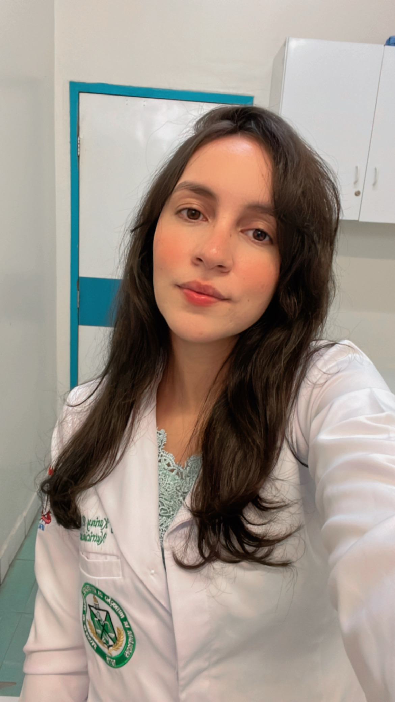

Sobre mim
Olá, eu sou Anny Pedrosa. Sou mestre em nutrição e desenvolvedora front-end em formação. Gosto de tecnologia, design, esportes e música.
Hobbies: musculação, patinação, desenho, violão, piano, leitura.
Formação
- Curso: Análise e desenvolvimento de sistemas — [UNINTER]
- Idiomas: Português (nativo), Inglês (intermediário)
- Formação: Mestrado completo (Nutrição) — [UFAL], 2023
Portfólio
Abaixo alguns projetos e demonstrações:
Contato
Envie uma mensagem, responderei em breve.